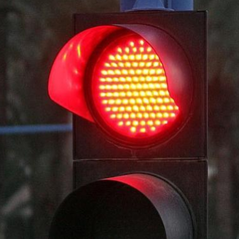
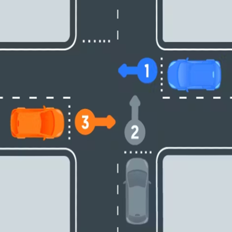
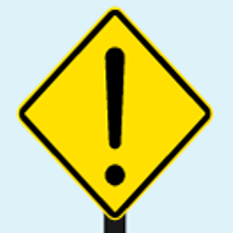
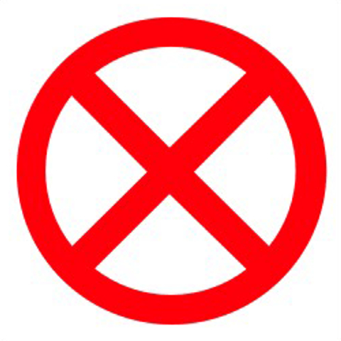
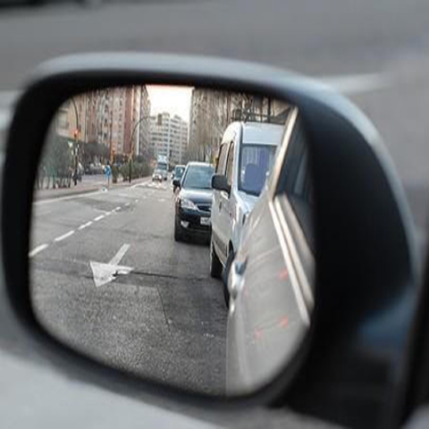
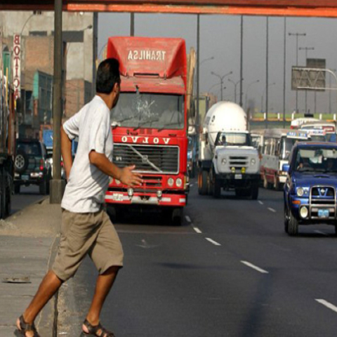

Examen Municipal Licencia Clase A1 - 2024
Tiempo restante: 20:00
1. ¿Cuál es la velocidad máxima permitida en zonas urbanas para vehículos de transporte público?
a) 50 km/h
b) 60 km/h
c) 40 km/h
d) 45 km/h
2. ¿Qué indica una luz roja intermitente en un semáforo?

a) Detenerse completamente y no avanzar.
b) Detenerse y avanzar con precaución.
c) Ceder el paso a peatones.
d) Prepararse para detenerse.
3. En una intersección sin señalización, ¿quién tiene el derecho de paso?

A) El vehículo que se aproxima por la derecha.
B) El vehículo que se aproxima por la izquierda.
C) El vehículo más grande.
D) El vehículo que llega primero.
4. ¿Qué indica una señal de tránsito con fondo amarillo y símbolo de precaución?

A) Peligro o advertencia
B) Obligación de detenerse
C) Zona de estacionamiento
5. ¿Cuál es la distancia mínima para estacionar frente a una salida de emergencia?
A) 5 metros
B) 10 metros
C) 15 metros
6. ¿Qué indica una señal de tránsito con fondo blanco y una X roja?

A) Prohibición de adelantar
B) Prohibición de paso
C) Zona de estacionamiento
7. ¿Cuál es la velocidad máxima permitida en autopistas en Chile?
A) 120 km/h
B) 100 km/h
C) 80 km/h
8. ¿Cuál es el propósito principal de los espejos retrovisores en un vehículo?

a) Decorar el vehículo
b) Vigilar a los pasajeros
c) Controlar los puntos ciegos y el tráfico detrás del vehículo
d) Mejorar la aerodinámica del vehículo
9. ¿Qué indica esta señal de tránsito con fondo azul y figura blanca?
a) Inicio de autopista
b) Fin de autopista
c) Desvío obligatorio a la derecha
d) Retorno de autopista
10. ¿Qué debe hacer si un peatón comienza a cruzar imprudentemente?

a) Tocar la bocina para advertirle.
b) Reducir la velocidad y permitirle el paso.
c) Continuar la marcha.
d) Señalizar y adelantar.
11. ¿Qué luces debe utilizar un vehículo al circular de noche en una zona urbana bien iluminada?
a) Luces altas.
b) Luces bajas.
c) Luces de posición.
d) Ninguna luz.
12. ¿Qué significa una señal triangular con borde rojo?
a) Obligación de paso
b) Información al paso
c) Ceder el paso
d) Prohibición de paso
13. ¿Qué debe hacer al acercarse a un cruce de ferrocarril sin barreras?
a) Acelerar para cruzar rápidamente
b) Reducir la velocidad y asegurarse de que no se aproxime un tren
c) Continuar a la misma velocidad
d) Detenerse completamente
14. ¿Cuál es la distancia mínima de seguridad al seguir a otro vehículo?
a) 1 metro
b) 5 metros
c) 2 segundos
d) 10 metros
15. ¿Qué debe hacer si su vehículo se avería en la autopista?
a) Continuar hasta la próxima salida
b) Señalizar, detenerse en un lugar seguro y colocar el triángulo de emergencia
c) Detenerse en el carril más rápido
d) Esperar ayuda en el interior del vehículo
16. ¿Qué indica una señal con un número y una letra 'R' debajo?
a) Restricción de altura
b) Restricción de tonelaje
c) Ruta recomendada
d) Reserva natural
17. ¿Qué acción es obligatoria al encontrarse con una señal de "Ceda el Paso"?
a) Acelerar para evitar detenerse
b) Continuar sin disminuir la velocidad
c) Disminuir la velocidad y ceder el paso a los vehículos en la vía preferente
d) Detenerse completamente siempre, incluso sin tráfico
18. ¿Cuál es el procedimiento correcto al salir de una autopista?
a) Aumentar la velocidad antes de tomar la salida
b) Señalizar con anticipación, disminuir la velocidad y tomar la salida de manera segura
c) Mantener la velocidad y señalizar solo al tomar la salida
d) Detenerse en el carril de aceleración antes de salir
19. ¿Qué indica una señal vertical rectangular de fondo blanco con borde negro?
a) Advertencia de peligros en la vía
b) Obligación de detenerse más adelante
c) Información útil para el conductor, como direcciones o distancias
d) Prohibición de continuar en línea recta
20. Para la obtención de la licencia profesional, ¿cuál es la edad mínima que deberá tener el conductor?
a) 20 años
b) 18 años
c) 19 años
d) 21 años
Reiniciar
Ver resultados